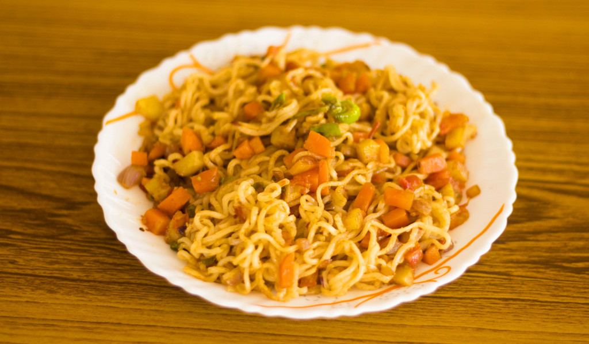

Maggie

Description
Whenever you are hungry, a packet of instant noodles is the best companion you can have. This time, why don't you learn how to make fried maggi noodles and enjoy it hot right at home? It is very easy to make and contains very few ingredients.
Ingredients
- 1 Maggi Noodles packet
- 1 Maggi Taste maker packet
- Salt as needed
- 2 Tablespoon Oil
- Chopped vegetables
Steps
- Heat 2tbsp of oil in a pan.
- Add finely chopped vegetables and saute for few seconds
- add Maggi taste maker which comes with its packet.
- Now take a bowl, add 2-1/2 cup water and bring it to boil.
- Add magggi, Stir for few seconds and then simmer the flame.
- Strain the water, keep the maggi aside.
- Now, add the maggi to the vegetable mixture and mix them properly with the help of forks so that the the taste makers are mixed with maggi properly.
- Serve this dish immediately to enjoy a great snack dish or a quick meal for one.